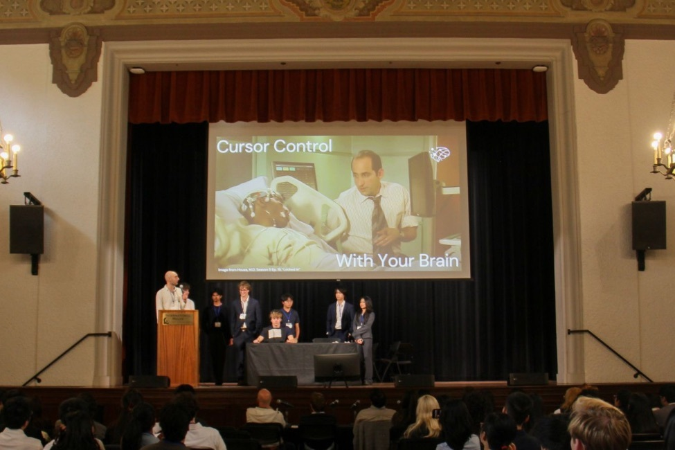
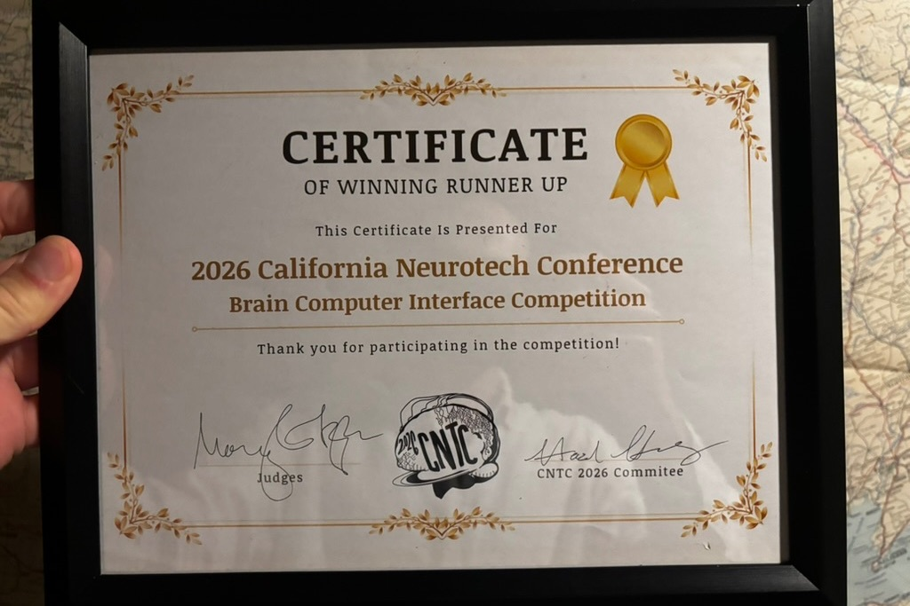
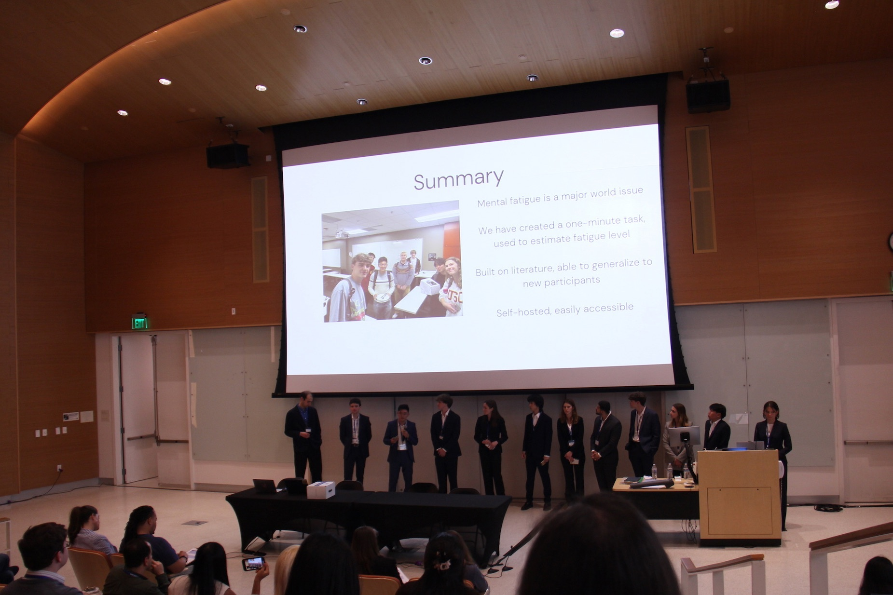
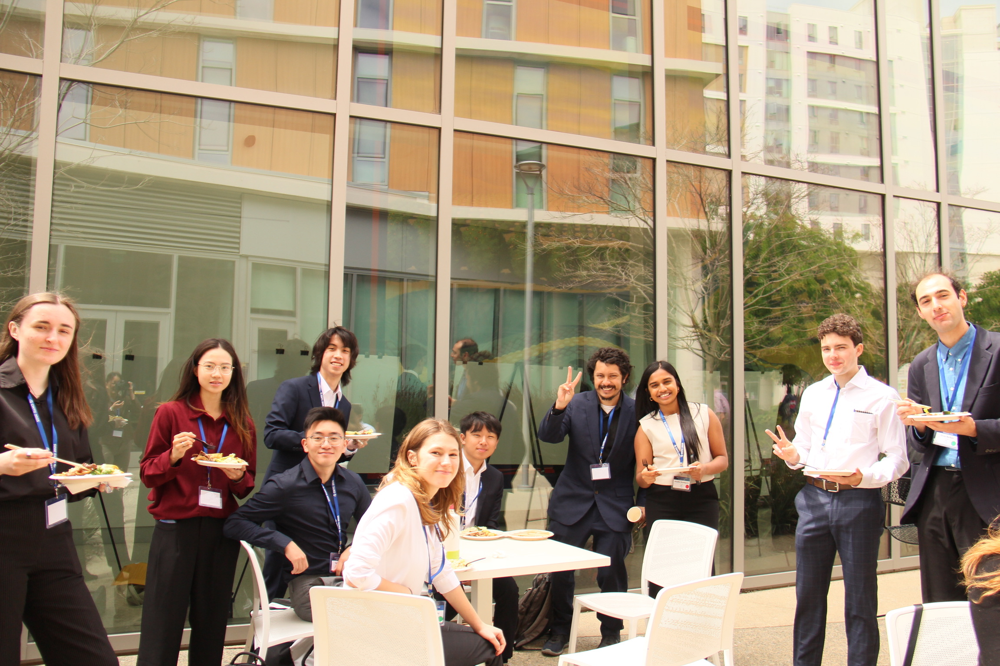

Onno Berkan
M.S. in Electrical Engineering & B.S. in Computational Neuroscience | USC
Ongoing Work
- Cognitive maps outside the hippocampus (see Piray Lab for details)
- EEG Mood Detection (see Neural Systems Engineering & Information Processing Lab)
- Coursework: EE 599 (Reinforcement Learning and Large Language Models), EE 510 (Linear Algebra)
Neurotech@USC
EEG Cursor Control BCI (2025-26)
[GitHub Link]
- Developed a real-time mind-controlled cursor based on four-class motor imagery, capable of moving in two dimensions.
- >85% within-session and >75% cross-participant accuracy using a Riemannian classifier, achieving <0.2s latency and rapid calibration to new users.
- Designed tasks, analyzed data, and adapted offline system to online use.
- Demonstrated live at the 2026 California Neurotechnology Conference BCI Competition, finished second place, project supervised by Dr. Vasileios Christopoulos.


ErrP Detector (2025-26)
[GitHub Link]
- ErrPs are your brain’s response to perceiving an error, which can be used as a reinforcement signal in training an RL agent or be used in real-time as a correction mechanism to auto-identify errors and improve model outputs.
- Achieved >80% within-session and >75% cross-participant mean detection accuracy with balanced classes and feedback <1.5s after model prediction.
- Designed tasks, analyzed data, and tested RL paradigms.

fMRI ADHD Diagnosis (2025-26)
- Tested several linear learners as well as CNNs on a public ADHD dataset.
- This was a teaching project where I helped a dozen underclassmen for two months, leading many to develop their first Comp. Neuro project while learning about machine learning for the first time.
EEG Mental Fatigue Quantifier (2024-25)
[GitHub Link]
- Built a Brain-Computer Interface to quantify mental fatigue using real-time EEG signals collected from OpenBCI hardware.
- 96% across-session and 85% across-participant binary accuracy; 83% & 65% 3-class accuracy using SVM.
- Led research, acted as system engineer.
- Demonstrated live at the 2025 California Neurotechnology Conference BCI Competition.


Piray Lab
Cognitive Maps (2024-Present)
- Analyzing fMRI data to develop novel models of cognitive map representations in and around the hippocampus, challenging the graph-/predictive map-based theories of spatial representations.
- Working under Dr. Payam Piray.
Learning Under Uncertainty (2024)
- Previously worked alongside a PhD student, investigating the influence of two types of noise on decision making under uncertainty using a Linear Reinforcement Learning Model.
Neural Systems Engineering & Information Processing Lab
EEG For Mood Detection (2026-Present)
- Collecting and analyzing high-density saline-EEG data to create a mood classifier that will work out-of-the-box in a clinical setting, as well as testing out novel interactive experimental tasks.
- Working under Dr. Maryam Shanechi.
Course Projects
Kalman Filter for Cross-Session Alignment (Fall 2025)
[GitHub Link]
- Built on data from Willet et al.’s RNN-based speech BCI, demonstrated that the use of Kalman Filters can allow for cross-session (cross-day) neural space alignment, a latent space which can be exploited by linear methods.
- Led to a 34% increase in accuracy with LDA, allowing for faster and more efficient calibration.
GNNs for Recommendation Algorithms (Summer 2024)
- Interned at a high-tech marketing firm looking to develop recommendation algorithms for clients, established a foundation for them to get into GNN-based systems.